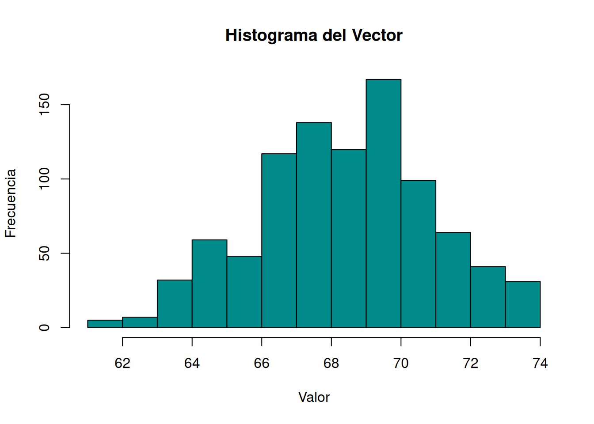
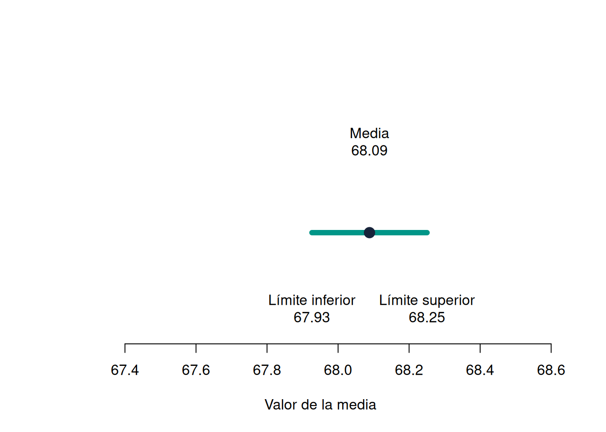
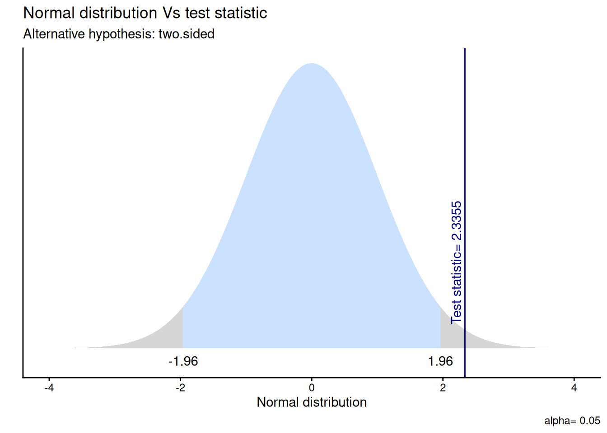

El objetivo de esta guía práctica es repasar intervalos de confianza, y además aplicar las herramientas teóricas y prácticas aprendidas hasta el momento para realizar pruebas de hipótesis, tanto para diferencias de medias como direccionales utilizando la prueba t.
En detalle, en el práctico de hoy veremos:
Cálculo e interpretación de intervalos de confianza
Formular hipótesis, realizar una prueba t en R e interpretar sus principales resultados.
1 Repaso intervalos de confianza
Recordemos que un intervalo de confianza es la mejor estimación del rango de un estadístico en la población (parámetro poblacional) con una muestra aleatoria
El nivel de confianza describe qué tan frecuentemente este procedimiento produciría intervalos que contienen la verdadera media poblacional si repitiéramos muchas veces el muestreo.
A modo de repasar el contenido de intervalos a confianza, resolveremos el ejercicio autónomo de la última sesión práctica. Trabajaremos con el conjunto de datos Galton, incluido en el paquete HistData, que contiene las estaturas de 928 hijos e hijas adultos recopiladas por Francis Galton en 1886.
Importante
Este es, de hecho, el conjunto de datos histórico que dio origen al estudio de la curva normal aplicada a variables biológicas.
if (!requireNamespace("pacman", quietly =TRUE)) install.packages("pacman") # Si no está instalado, instala el paquetepacman::p_load(HistData)data("Galton")names(Galton) # revisar las variables disponibles: "parent" y "child"
[1] "parent" "child"
altura <- Galton$child # creamos el vector con la variable de interés
Tip
Los # en el código
En este código y siguientes aparecen varios #, que son una función de comentarios en R. Todo lo escrito después de # es un comentario para explicar el código o texto. R no lo ejecuta.
Pueden servir como herramientas para tomar apuntes mientras se trabaja en el código
Tip
La unidad de medida de la variable se encuentra en pulgadas.
Calcule y describa la distribución
Obtenga la media y desviación estándar de la estatura.
media <-mean(Galton$child)desv_estandar <-sd(Galton$child)media
[1] 68.08847
desv_estandar
[1] 2.517941
Visualice la distribución en un histograma
hist(Galton$child,main="Histograma del Vector",xlab="Valor",ylab="Frecuencia",col="cyan4",border="black")

Estandarice los datos (puntajes Z)
Transforme la variable a puntajes Z
z_scores <- (Galton$child - media) / desv_estandar # aplicamos la fórmula del puntaje Z a la variable child dentro de la base de datos Galton
¿Cuál es el máximo puntaje Z y el mínimo puntaje Z? ¿A qué estatura corresponden?
max(z_scores)
[1] 2.228618
El máximo puntaje Z corresponde a 2.23
max <-max(z_scores)(max * desv_estandar) + media
[1] 73.7
Para calcular el valor observado, pensemos en una lógica de ecuación: necesitamos despejar el valor observado. Entonces, si la desviación estándar está dividiendo para el cálculo del puntaje Z, para calcular el valor observado debe realizar la operación contraria, es decir, multiplicar. De igual manera, si para el cálculo del puntaje Z la media está restando, para estimar el valor observado debe pasar a ser suma.
De esta manera, observamos que la altura máxima entre todos los hijos es de 73.7 pulgadas.
min(z_scores)
[1] -2.53718
El mínimo puntaje corresponde a -2.53
min <-min(z_scores)(min * desv_estandar) + media
[1] 61.7
Para calcular el valor estimado seguimos el mismo procedimiento que antes, lo cual nos indica que la altura mínima entre todos los hijos es de 61.7 pulgadas.
Verifique la media y desviación estándar
mean(Galton$child)
[1] 68.08847
sd(Galton$child)
[1] 2.517941
En promedio, los hijos e hijas presentes en la base miden 68.10 pulgadas, y su altura varía entre \(\pm\) 2.58 pulgadas respecto del promedio.
Calcule el error estándar de la variable
Importante
Recordemos que la fórmula del error estándar es: \[
SE = \frac{s}{\sqrt{n}}
\]
Donde:
\(s\) es la desviación estándar de la muestra. \(n\) es el número de casos de la muestra.
Para nuestro caso, reemplazamos los valores en la fórmula:
Esto quiere decir que el error estándar estimado de la distribución de medias muestrales es 0,083: nos indica cuánto tienden a variar las medias entre posibles muestras de igual tamaño.
Importante
El error estándar es una estimación de la desviación estandar de los promedios de varias muestras a partir de una sola muestra
Calcule el intervalo de confianza para la media
Estime el IC para un 95% de confianza
Importante
Su fórmula es la siguiente:
\[
IC = \bar{x} \pm z \cdot \frac{s}{\sqrt{n}}
\]
Donde:
\(\bar{x}\) es la media de la muestra.
\(z\) es el valor crítico.
\(s\) es la desviación estándar de la muestra.
\(n\) es el tamaño de la muestra.
\(\frac{s}{\sqrt{n}}\) corresponde al error estándar.
lim_inf <- media -1.96* se # Limite inferior del Intervalolim_inf
[1] 67.92647
lim_sup <- media +1.96* se # Límite superior del Intervalolim_sup
[1] 68.25047
Generamos un gráfico para visualizar de mejor manera el intervalo de confianza que construimos

Media muestral e intervalo de confianza del 95 %.
Podemos observar que contamos con una media muestral de 68.1 como estimación puntual. Ahora, podemos asegurar con un 95% de confianza que la media poblacional se encuentra entre 67.93 y 68.25.
Importante
En simple: si estimamos 100 intervalos de confianza, 95 de ellos contendrán la media poblacional.
Estime el IC para un 99% de confianza. ¿Qué sucede con el ancho del intervalo?
lim_inf_99 <- media -2.58* se # Limite inferior del Intervalolim_inf_99
[1] 67.87522
lim_sup_99 <- media +2.58* se # Límite superior del Intervalolim_sup_99
[1] 68.30172
Podemos observar que al calcular el IC para un 99% de confianza, el ancho del intervalo se amplía, es decir, el rango donde se puede hallar el parámetro poblacional es mayor, encontrándose entre 67.88 y 68.30
Explore el efecto del tamaño muestral
Generemos 2 submuestras aleatorias con la función sample().
la función set.seed fija una semilla para que las secuencias de números “aleatorios” que produce R sean reproducibles. Es decir, asegura que otra persona que corra el mismo script obtenga los mismos resultados
Calcule el error estándar y el intervalo de confianza al 95% de cada muestra ¿Qué pasa con el error estándar y el intervalo de confianza a medida que aumenta el tamaño de la muestra?
La media como estimación puntual es de 67.9, mientras que con un 95% de confianza podemos asegurar que el parámetro poblacional se encuentra entre 67.28 y 68.60.
Ahora realicemos el mismo procedimiento con la muestra generada con 500 casos
Al comparar el error estándar de la muestra de 50 con la muestra de 500, podemos ver que, a medida que la muestra es más grande, el error estándar se vuelve más pequeño.
De la misma manera, el intervalo de la muestra de 50 casos es de 67.28 y 68.60, mientras que el de la muestra de 500 es más reducido, conteniendo valores entre el 67.85 y 68.28. Así, podemos afirmar que una muestra con mayor cantidad de casos tenderá a entregar intervalos más pequeños, es decir, estimaciones más precisas
Calcule el error estándar y intervalo de confianza al 99% de cada muestra ¿Qué pasa con el error estándar y intervalo de confianza a medida que aumenta el tamaño de la muestra?
media_50 -2.58* se_50
[1] 67.06528
media_50 +2.58* se_50
[1] 68.81472
media_500 -2.58* se_500
[1] 67.76373
media_500 +2.58* se_500
[1] 68.33627
A medida que la muestra se vuelve más grande, el error estándar se vuelve más pequeño, es decir, es más preciso en la estimación.
A medida que el intervalo de confianza aumenta en su nivel de confiabilidad, el rango se vuelve más amplio y, en consecuencia, la estimación es menos precisa.
2 Test de hipótesis
Hasta ahora utilizamos el error estándar para expresar la incertidumbre de una estimación mediante intervalos de confianza. Ahora usaremos esa misma idea de variabilidad muestral para responder una nueva pregunta: ¿las diferencias entre grupos que logramos observar en una muestra, pueden ser representativas de a nivel de la población?
Para este punto, recurriremos a todas las herramientas que hemos aprendido hasta ahora:
Concepto
Definición
Curva normal
Distribución teórica que nos entrega un estándar para comparar distribuciones empíricas
Teorema central del límite
Al calcular un estadístico de distintas muestras de una misma población, estos valores se distribuirán de manera normal
Error estándar
Desviación estándar de los promedios de distintas muestras de una misma población
Puntajes Z
Medida estandarizada la cual se expresa en términos de desviación estándar
Intervalos de confianza
Rango de probabilidad de un parámetro poblacional
Para esta sección del práctico, trabajaremos con un subconjunto de datos previamente procesados de la Encuesta de Caracterización Socioeconómica (CASEN) del año 2022, elaborada por el Ministerio de Desarrollo Social y Familia.
Para este ejercicio, obtendremos directamente esta base desde internet. No obstante, también tienes la opción de acceder a la misma información a través del siguiente enlace: CASEN 2022. Desde allí, podrás descargar el archivo que contiene el subconjunto procesado de la base de datos CASEN 2022.
2.1 Los cinco pasos para la inferencia estadística
En inferencia, las pruebas de hipótesis nos permiten evaluar qué tan compatibles son los resultados observados en nuestra muestra con una hipótesis planteada sobre la población. Aquí recomendamos una lista de cinco pasos lógicos para enfrentarnos a la inferencia estadística:
Paso
Detalle
1
Formula \(H_0\) y \(H_A\) y estipula la dirección de la prueba
2
Calcula el error estándar (SE) y el valor estimado de la prueba (ej: Z o t)
3
Especifica la probabilidad de error \(\alpha\) y el valor crítico de la prueba
4
Contrasta el valor estimado con el valor crítico
5
Interpreta los resultados
Importante
La hipótesis nula (\(H_{0}\)) es la contraria a la hipótesis original, y es la buscamos falsear
Además de estos 5 pasos también existe la posibilidad de calcular un intervalo de confianza, que acompañe la precisión de nuestra estimación.
2.2 Preparación datos
Comencemos por preparar nuestros datos. Iniciamos cargando las librerías necesarias.
Importante
La función p_load del paquete pacman simplifica el proceso de carga de paquetes, ya que se pueden cargar varios paquetes a la vez y, en caso de que alguno de esos paquetes no esté previamente instalado, p_load lo reconoce e instala
pacman::p_load(dplyr, # Manipulación datos gginference, # Visualización rempsyc, # Reporte kableExtra, # Tablas broom, # Varios flextable # nice table )options(scipen =999) # para desactivar notación científicarm(list =ls()) # para limpiar el entorno de trabajo
Importante
dplyr será uno de los paquetes más frecuentrados en nuestro flujo de trabajo, ya que nos entrega las herramientas esenciales para el procesamiento de datos sociales. Algunas de ellas nos permiten realizar el filtrado, selección, orden y creación de variables.
Cargamos los datos directamente desde internet.
load(url("https://github.com/cursos-metodos-facso/datos-ejemplos/raw/main/proc_casen.RData")) #Cargar base de datos
A continuación, exploramos la base de datos proc_casen.
Contamos con 29 variables (columnas) y 202.111 observaciones (filas).
2.3 Recordemos…
En estadística, la formulación de hipótesis que implica dos variables (o la comparación de grupos) busca determinar si las diferencias que se encuentran en la muestra son extrapolables a la población.
Ahora vamos a aprender a contrastar hipótesis sobre diferencias entre grupos. Si nuestra hipótesis plantea solamente que los grupos son diferentes, sin especificar cuál tendrá un promedio mayor, utilizamos una prueba de dos colas o no direccional.
NotaDiferencias de medias (o prueba de dos colas)
Contrastamos la hipótesis nula de no diferencias entre grupos: \[ H_{0}: \mu_{1} - \mu_{2} = 0 \] En relación a una hipótesis alternativa sobre diferencias entre grupos: \[ H_{A}: \mu_{1} - \mu_{2} \neq 0 \]
Además, podemos plantear hipótesis respecto a que el valor de cierto parámetro para un grupo puede ser mayor o menor al de otro grupo. A esto se le conoce como hipótesis de una cola y lo veremos más adelante.
Veamos ahora cómo aplicar todos estos conocimientos con ejercicios. Primero, para asegurar la reproducibilidad de los resultados, utilizamos set.seed
set.seed(123) # Fijar la semilla para reproducibilidad
2.4 Ejercicio 1
Estamos en un escenario donde la pregunta de investigación es: ¿Existen diferencias salariales entre hombres y mujeres en Chile?
Para contrastar esta hipótesis, vamos utilizar la base de datos proc_casen, seleccionaremos las variables sexo e ytrabajocor (ingresos) y haremos un subset de datos de 1.500 casos.
casen_subset <- proc_casen %>%select(sexo, ytrabajocor) %>%# seleccionamossample_n(1500) # extraemos una muestra de 1500 casoscasen_subset <-na.omit(casen_subset) # eliminamos casos perdidos (listwise)
Tip
El símbolo %>% se llama pipe, y es una de las funciones más útiles de R. Su utilidad radica en que permite encadenar operaciones, es decir, lee el código como una secuencia de pasos en lugar de funciones aisladas, donde el resultado de un comando pasa a ser el primer argumento del siguiente comando, lo que permite ahorrar líneas de código
Generamos tabla para visualizar la distribución de los datos.
casen_subset %>% dplyr::group_by(sexo) %>%# se agrupan por la variable categórica dplyr::summarise(Obs. =n(), # columna para el N de cada categoríaPromedio =mean(ytrabajocor, na.rm=TRUE),SD =sd(ytrabajocor, na.rm=TRUE)) %>%# se agregan las operaciones a presentar en la tabla kableExtra::kable(format ="markdown") # se genera la tabla
El primer aspecto a establecer es el tipo de hipótesis a formular: ¿Direccional o no direccional? En este caso, la pregunta no indica una direccionalidad, por lo tanto corresponde a una hipótesis no direccional. Si hubiera sido una pregunta que hiciera referencia a una mayoría de un grupo por sobre otro (“¿Es el salario de los hombres mayor que el de las mujeres?”) correspondería a una hipótesis direccional.
La hipótesis general es que el salario de los hombres es distinto que el de las mujeres. Pasando a lenguaje de hipótesis, esto se plantea como:
En clases vimos que los pasos 2, 3 y 4 corresponden a:
Obtener error estándar y estadístico de prueba empírico correspondiente (ej: Z o t)
Establecer la probabilidad de error \(\alpha\) (usualmente 0.05) y obtener valor crítico (teórico) de la prueba correspondiente
Cálculo de intervalo de confianza / contraste valores empírico/crítico
Esta secuencia de pasos tiene un sentido pedagógico para poder entender cómo finalmente se llega a interpretar el contraste de hipótesis en el paso 5. Pero en análisis de datos, luego de establecer las hipótesis nos vamos directamente al software que nos permite obtener de una vez toda la información de los pasos 2, 3 y 4.
test_ej1 <-t.test(casen_subset$ytrabajocor ~ casen_subset$sexo, # define las variables que serán sometidas al test de hipótesisalternative ="two.sided", # define la hipótesis alternativaconf.level =0.95) # establece el nivel de confianzatest_ej1
Welch Two Sample t-test
data: casen_subset$ytrabajocor by casen_subset$sexo
t = 2.3355, df = 674.99, p-value = 0.01981
alternative hypothesis: true difference in means between group 1 and group 2 is not equal to 0
95 percent confidence interval:
16781.61 193947.32
sample estimates:
mean in group 1 mean in group 2
690724.8 585360.4
También podemos visualizarlo en una tabla más amable.
stats.table <-tidy(test_ej1, conf_int = T) # se convierten los datos del test en un dataframenice_table(stats.table, broom ="t.test") # convierte el dataframe en tabla
Method
Alternative
Mean 1
Mean 2
M1 - M2
t
df
p
95% CI
Welch Two Sample t-test
two.sided
690,724.82
585,360.36
105,364.47
2.34
674.99
.020*
[16781.61, 193947.32]
Visualicemos la distribución de esta prueba y su zona de rechazo.
gginference::ggttest(test_ej1)

5. Interpretación
La prueba t que evalúa la diferencia de medias entre el salario y el sexo sugiere que el efecto es positivo y estadísticamente signficativo (diferencia = 105.364,47, t = 2.34, p < .05). El valor \(p\) indica que la probabilidad de observar una diferencia de esta magnitud, o mayor, bajo la suposición de \(H_{0}\) es menor al 5%. Por tanto, con un 95% de confianza, rechazamos la \(H_{0}\) ya que existe evidencia a favor de nuestra \(H_{A}\) respecto a que hay diferencias de salario entre hombres y mujeres.
Importante
Las hipótesis se pueden rechazar, pero nunca se aceptan (lógica de falsación)
2.5 Ejercicio 2
Tomando como ejemplo el trabajo de la ganadora del Premio Nobel de Economía 2023 Claudia Goldin, en este siguiente ejercicio evaluaremos la siguiente pregunta: ¿Es el salario de las mujeres con hijos distinto al salario de las mujeres sin hijos? Por ende, usaremos prueba \(t\) para diferencia de medias.
Utilizaremos la bbdd proc_casen, seleccionando las variables ocupado, sexo, ytrabajocor e hijo. Luego, filtraremos por ocupado == 1 y sexo == 2 para quedarnos sólo con mujeres ocupadas y generaremos una muestra aleatoria de 1.500 casos con la función sample_n(). Luego, eliminaremos los casos pérdidos con na.omit().
set.seed(123)goldin_data <- proc_casen %>%# crear subset a partir de la base proc_casen dplyr::select(ocupado, sexo, ytrabajocor, hijo) %>%# selección de variables dplyr::filter(ocupado ==1& sexo ==2) %>%# se filtra solo por mujeres ocupadassample_n(1500) %>%# submuestra de 1500na.omit()# creamos subset
Ahora generamos una tabla de descriptivos de los ingresos (ytrabajocor) según si las observaciones tienen hijos o no (hijo), presentando la cantidad de casos, la media y la desviación estándar.
El primer paso es traducir nuestra pregunta a una hipótesis estadística contrastable. Para ello cabe preguntarse, ¿direccional o no direccional? En este caso, es una hipótesis no direccional (distinto que)
Luego, debemos establecer las hipótesis nula y alternativa:
(\(H_0\)): El promedio salarial de las mujeres sin hijos es distinto que el promedio salarial de las mujeres con hijos.
(\(H_A\)): El promedio salarial de mujeres sin hijos no será diferente al promedio salarial de las mujeres con hijos.
Pasos 2, 3 y 4 de una vez con R
Siguiendo el ejemplo del Ejercicio 1, utilizaremos el software para estimar el test de hipótesis con un 95% de confianza.
test_ej2 <-t.test(goldin_data$ytrabajocor ~ goldin_data$hijo, alternative ="two.sided",conf.level =0.95)test_ej2
Welch Two Sample t-test
data: goldin_data$ytrabajocor by goldin_data$hijo
t = 2.3914, df = 492.66, p-value = 0.01716
alternative hypothesis: true difference in means between group 0 and group 1 is not equal to 0
95 percent confidence interval:
20564.3 209967.6
sample estimates:
mean in group 0 mean in group 1
706113.7 590847.7
A partir de los resultados obtenidos: ¿es posible rechazar la hipótesis planteada?
Importante
La prueba t que evalúa la diferencia de medias
Con un 95% de confianza es posible rechazar la hipótesis nula planteada. La diferencia del promedio salarial entre las mujeres sin hijos y con hijos es estadísticamente significativa.
3 Ejercicio autónomo
En este ejercicio tomamos de ejemplo una pregunta clásica en ciencias sociales: ¿el ingreso de las personas está relacionado a su nivel educacional?. Para responder esta pregunta vamos a usar una prueba \(t\) de contraste de medias para dos muestras independientes. Realice lo siguiente:
Utilice la bbdd proc_casen y seleccione las variables ytrabajocor y universitaria.
Luego cree una semilla con set.seed y genere una muestra aleatoria 1500 casos con la función sample_n() y elimine los datos perdidos de la variable ytrabajocor.
Genere una tabla de descriptivos de los ingresos (ytrabajocor) según si las personas cuentan con educación universitaria o no (universitaria). Presente cantidad de observaciones por categoría, media y desviación estándar.
Realice el test de hipótesis considerando los comandos que se vieron a lo largo de la clase y compruebe si es posible rechazar la hipótesis nula
4 Repaso
Hoy vimos:
Repaso de los intervalos de confianza, observando la importancia del error estándar y la estimación de rangos para encontrar el parámetro poblacional
Contraste de hipótesis mediante pruebas de diferencias de medias
Aplicar los 5 pasos para la inferencia mediante software
Para cerrar…
Importante
Nuestro objetivo no es rechazar \(H_{0}\) a toda costa, sino evaluar si los datos entregan evidencia suficiente para rechazarla. Un resultado en que no rechazamos \(H_{0}\) también es un resultado estadístico válido